Applications:
There are three options for run the program, Create/Update polygon, Update solution and Insert point in the central axis.
The flag -n (Create/Update new polygon), four tables will be add to the polygon map, where the parameter of the road will be stored. This flag must be selected for create a new polygon for the first time or if the vertices/nodes of the polygon are moved or added another ones.
The flag -u "Update solution" will write the selected maps, with the parameters included in the tables of the polygon.
The name of the outs maps, are given by default. If the out name map is preceded with character "_", this name will be added to the polygon name map. This is useful for change of axis quickly.
The -i flag (Insert points), new points for defining the road, can be added to the layers _Vertical, _Section and _Trans, referencing by pk.
The user must select the layer and give a list with the pks.
The Interval in straights and Interval in curves options define the resolution of the straight lines and the curves respectively.
The other options are described below.
The -y flag write a 3D central axis (contains the plant and vertical alignment), with the name in plantpoly option (default: NameRoad_poly).
The -h flag write the horizontal alignment, with the name in plant option. The map created, contains the segments of the alignment and its information is stored in three tables/layers. (default: NameRoad_plan).
The -k flag write pk marks in horizontal, with the name in pks option.(default: NameRoad_Pks).
The pkopt option define the distance between normal marks (npk), distance between principal marks (mpk), longitude of normal marks and longitude of principal marks.
The -d flag write the displaced platform lines in horizontal, with the name in displ option.
The -a flag write an area map with displaced platform lines in horizontal, with the name in displ_area option.
The -v flag write the vertical alignment in horizontal, with the name in raised option. The map created, contains the segments of the alignment and its information is stored in three tables.(default: NameRoad_Vert)
The -l flag write the raised of the central axis (vertical alignment), the terrain profile in a longitudinal profile map, and vertical polygon with the names given in LPras ,LPterrain and LPejeref options (default: NameRoad_LP_Ras, NameRoad_LP_terrain and NameRoad_LP_Polygon).
The -m flag write the coordinates axis and the profile guitar in the longitudinal profile with its marks, with the names given in LPaxisX, LPaxisX_marks, LPaxisY and LPaxisY_marks options (default: NameRoad_LP_AxisX, NameRoad_LP_AxisXmarks, NameRoad_LP_AxisY and NameRoad_LP_AxisYmarks).
With the option LPScale, the vertical scale of the longitudinal profile can be given.
The LPopt option give the longitude of marks, distance between marks in axis x and y, and distance between lines of the guitar.
The -c flag write the projection of cross section in horizontal, with the name in cross option, and with the lines selected in cross_opt option.
The -r flag write a map with points of intersection of displaced lines with cross-section lines, in horizontal, with the name in crossdispl option. The lines that will be crossed are selected in displ_opt
The -f flag write the raised of cross-section (cross alignment) and the terrain profile in a traversal profile map with the names given in LTras and LTterrain options (default: NameRoad_TP_Ras and NameRoad_TP_terrain
The -m flag write the coordinates axis and the profile guitar in the longitudinal profile with its marks, with the names given in LTaxisX and LTaxisY options (default: NameRoad_TP_AxisX and NameRoad_TP_AxisY ).
With the option LTScale, the vertical scale of the longitudinal profile can be given.
The LTopt option give the longitude of marks, distance between marks in axis x and y, and distance between lines of the guitar.
The LTopt2 option give the number of rows of cross-section to display, distance between cross-section in axis x and y.
The -t flag write the Dem profile of the central axis, with the name in outtlong option.
The -q flag write the projection of transects lines on a DEM (3D lines of terrain) in horizontal, with the name in outtcross option.
The -s flag write the slope soil lines calculated with the last displaced lines (perpendicular to the central axis), with the name in outslope option
The -e flag write the areas map with slope soil lines and the last displaced lines in horizontal, with the name in outslopeareas option
The -p flag write a 3D points map of lines selected in pts_opt option in horizontal, with the name in outpoints option
The -b flag write a 3D lines map of lines selected in break_opt option in horizontal, with the name in outbreak option
The -o flag write a hull area map of lines selected in hull_opt option in horizontal, with the name in outhull option
Geometric roadway design can be broken into four main parts: horizontal alignment, profile (vertical alignment), platforms definition and cross-section.
There are maps in horizontal alignment for display in plan, maps in vertical alignment that requires a new display for visualization in profile view, and maps in cross-section that requires a new display for visualization in profile cross-section view.
The tables stored in the polygon map are:
Created with only cat column (if not exist), is for free use to add columns with information of the road.
"NameRoad"_Horizontal, for insert the parameters of the horizontal alignment. This layer have all vertices and nodes of the horizontal polygon. No more points can be added to this layer with the insert point option.
The columns are:
+ for clockwise
- for anticlockwise
"NameRoad"_Vertical, for insert the parameters of the vertical alignment.This layer are created with the first an last vertices of the horizontal polygon. New point can be added by the flag i (Insert point), or with edit gui. The added points, are inserted in the central axis referencing by pk.
The columns are:
The columns for editing by the user are:
Between two points, if the second input distance equal zero, the line will be stopped. If the second input distance equal -1, this point will not be processed and the next one will be considered.
"NameRoad"_Trans, for insert the parameters of transects to the central axis. This layer are created with the first an last vertices of the horizontal polygon. New point can be added by the flag i (Insert point), or with edit gui. The added points, are inserted in the central axis referencing by pk.
The columns for editing by the user are:
First we are going to create a polygon with wxdigit, this will create a table in layer 1. The name of this map is road1. The polygon will have three lines,two vertices and two nodes. In this layer we can create, for example, with the command v.db.addcolumn, three new columns to store our information about the road. This columns are Name, Cod, Date.
At this point we can give the name and select the flag -n (Create/Update polygon) and then run. Four tables are crated (or five if the table in layer 1 don't exist).
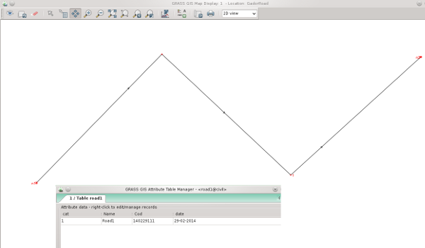
The second one, in layer 2, is the definition of the road in plant. This table have four rows, the first and the last are the vertices of the polygon and the other are the nodes of the polygon.
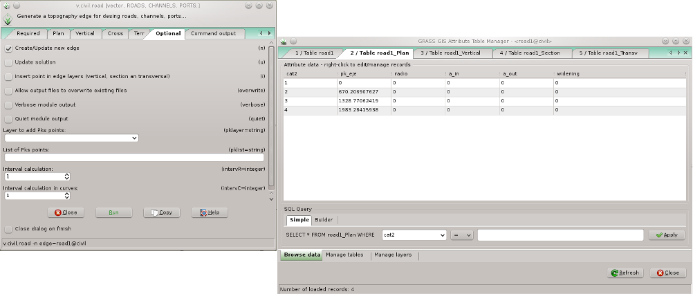
In this table we can define the radio, the parameter A of the input and output clothoid, widening (applied to the displaced lines, see below) in curves and superelevation (applied to the displaced lines, TODO) for each node.
After that, in the tab Plant, we can select the flag -h to write the horizontal alignment and the flag -k to write the pk's marks. At this moment we need to update the solution with the flag -u and then run.
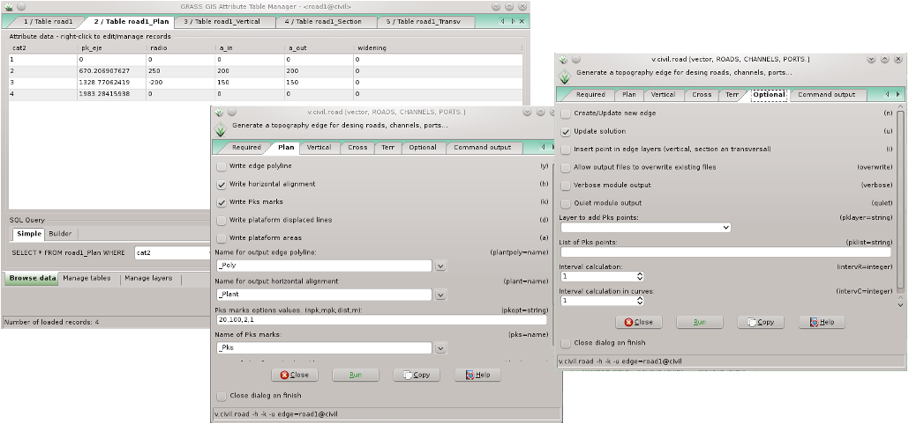
Then we get two maps road1_plant and road1_pks. The road1_plant has three tables with the parameters of the horizontal alignment. The road1_pks has a table with a pk columns to use with labels.
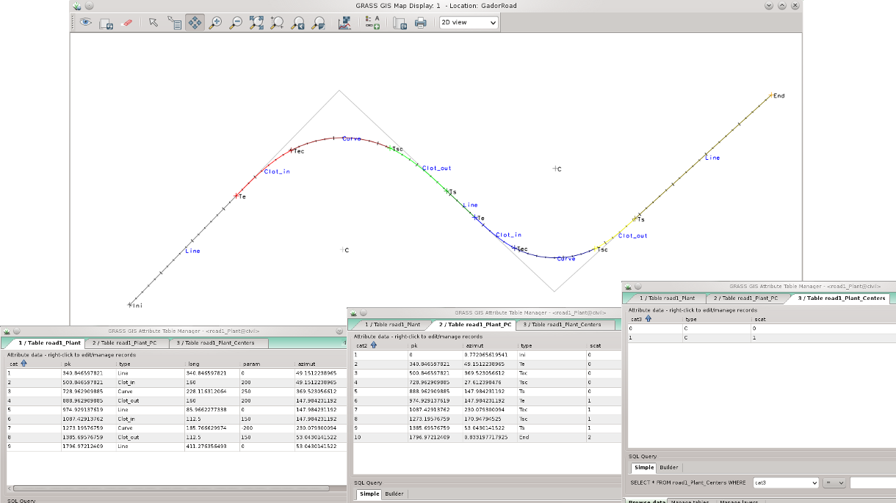
At any time we can move the vertices/nodes or add new ones to the polygon, for example, wxdigit. If we do that, we need to select the flag -n to update the polygon and the flag -u to update the solution again.
The polylines that you can see in the last figure have a distance between points about 1 meters by default, but this can be changed in the Interval in straights and Interval in curves options (see below).
An example of this section can be seen in
http://www.youtube.com/watch?v=n2JYfgVDcmY
(You can activate HD quality for better visualization)
The third table, in layer 3, is where the vertical alignment is stored. When this table is created, have two rows, who are the first and the last points of the central axis, and for that, the vertices of the new polygon of the vertical alignment.
In this table we can insert breakpoints or new nodes to the vertical polygon to define new vertical alignments, with the option -i, selecting the layer Vertical and giving a list of pks where the breakpoints will be inserted in the central axis. In the columns we can define the elevation, the parameter kv and the pk of each node.
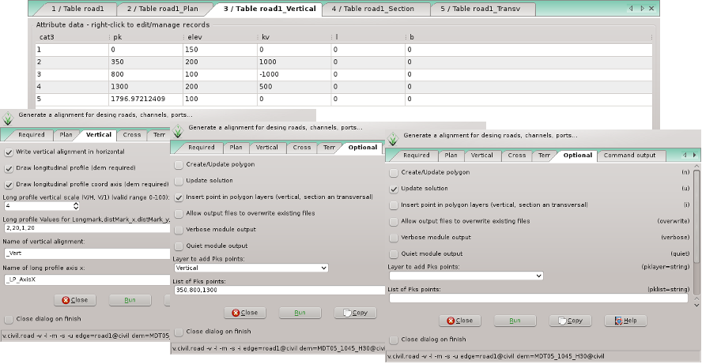
After that, in the tab Vertical, we can select the flag -v to write the vertical alignment in plant. The map that we get is road1_Vert. It has two tables with the parameters of the vertical alignment.
The flag -l draw the longitudinal profile of the central axis of the road and the terrain profile. The road1_LP_Ras has two tables with the parameters of the vertical alignment.
The flag -m draw the coordinates axes of the longitudinal profile. Those maps have tables with columns for use with labels.
We need to give a dem in the terrain tabs, select the flag -u for update the solution and then run, to obtain those maps.
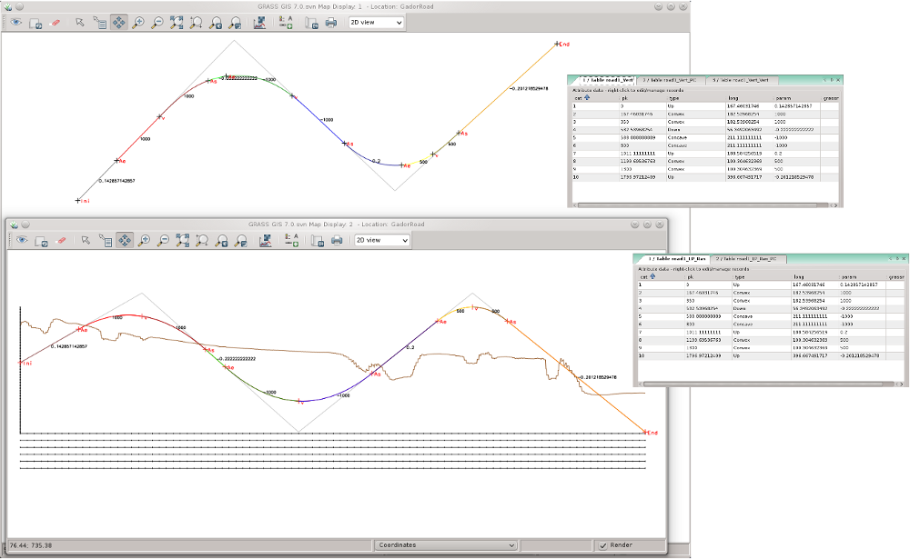
An example of this section can be seen in
http://www.youtube.com/watch?v=AuKYSxohLKE
(You can activate HD quality for better visualization)
The fourth table, in layer 4, is the definition of the platforms lines in plant. For first time, this table have two rows, who are the vertices of the polygon, and for that the first and the last points of the central axis.
The displaced lines are defined in sec_left,sec_right columns with a list separated with ";", starting from left to right in each side of the central axis. Each displaced line is defined with distance to the central axis and height to the central axis (d,h).
The mode to calculate the displaced lines is defined in the type_left,type_right columns,for each line separated by ";".
In this table we can insert breakpoints for the displaced lines with the option -i, selecting the layer Section and giving a list of pks where the breakpoints will be inserted in the central axis. In this example we are going to insert some breakpoints and define three displaced lines in the left side to the central axis and three for right side.
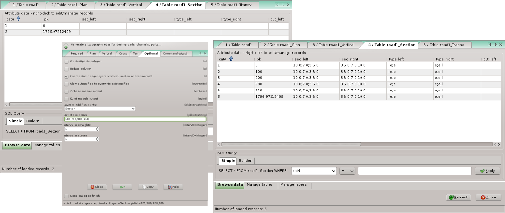
The platform lines define, the lanes of a road, the platform limits, ... Those lines can be parallel to the central axis of a road (or not). If it's so, we need to know that the parallel to a clothoid is not a clothoid. Then we have two ways to do the platform lines.
In the first way, mode exact "e", we need to calculate a new displaced central axis, e.i., a parallel to the polygon not to the central axis. The new alignment or displaced line created within the new polygon have new clothoids for the transitions. To run this mode, the first and the last points, of a section of the road, must have the same displaced distance.
The widening parameter of the section above, only will be calculate in this mode, because the widening growing in the clothoid, then is applied only to the displaced lines calculated with clothoid.
The second way, mode lineal "l", we calculate the perpendicular displaced distance to each point of the central axis, to obtain a parallel to it, where the transitions won't be clothoids. Then we can't know where are the tangents of transitions. But in this mode, the displaced distance for the first and the last points don't have to be the same in a section of the road. A lineal variation will be done between those points.
For this example, the first and last are defined as lineal and the rest are in mode exact.
Into this second way, the variation don't have to be only lineal. We can define a circumference in the displaced line with the option "rR,A".
Between two points, if the second input distance equal zero, the line will be stopped. If the second input distance equal -1, this point will not be processed and the next one will be considered.
After that, in the tab Plant, we can select the flag -d to write the displaced lines map. At this moment we need to update the solution with the flag -u and then run.
Then we get a map road1_Displ. This map has two tables, the first has the displaced lines and the second has the characteristic points of the lines if the mode "e" has been used.
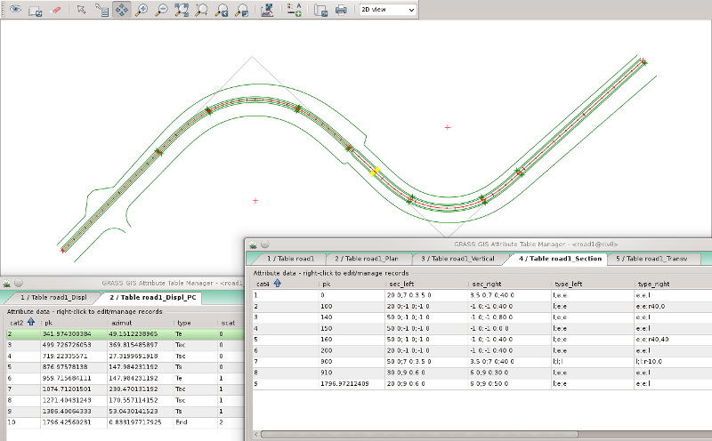
With the height of the lines we can obtain different forms, that we'll see in the cross sections.
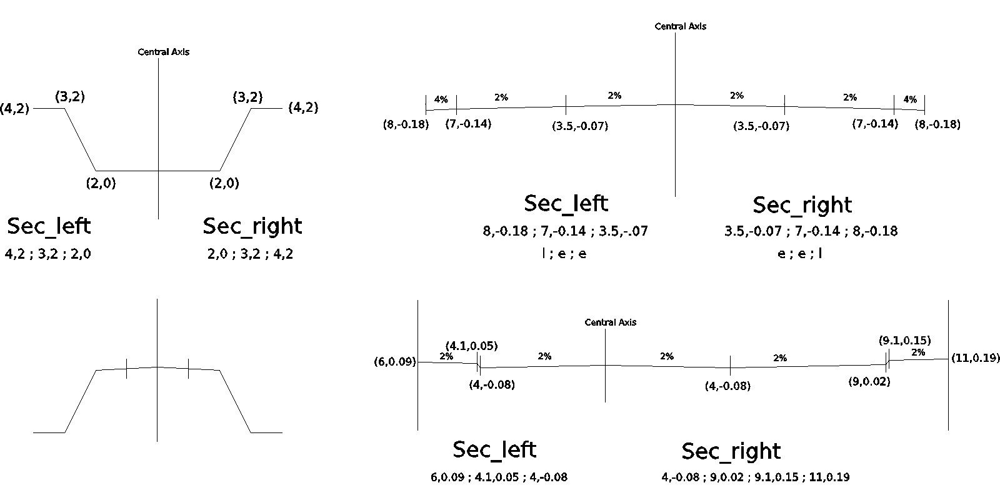
The cut/fill are calculated with the first displaced line of the left side and the last displaced line of the right side, and with the slope given in the columns cut_left, cut_right, fill_left, fill_right
An example of this section can be seen in
http://www.youtube.com/watch?v=3tYxD8HsDEA
(You can activate HD quality for better visualization)
The fifth table, in layer 5, is the table where we are going to define transversals 2D lines to the central axis, to obtain later, the cross sections.
This lines contains the cutoff with the displaced lines.
When this table is created, have two rows, who are the first and the last points of the central axis.
In this table we can insert breakpoints for the transversals lines with the option -i, selecting the layer Trans and giving a list of pks where the breakpoints will be inserted in the central axis. In this example we are going to insert some breakpoints to define different transversals lines.
In the columns dist_left, dist_right we can define the distance left and right to the central axis and in the column npk the distance between lines.
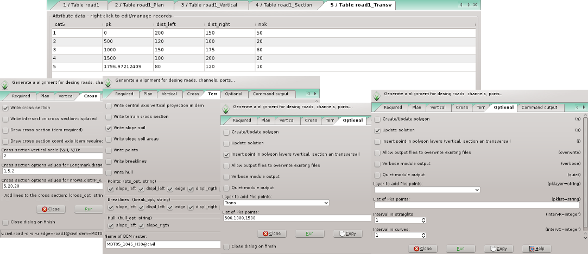
Then, in the tab Cross, we can select the flag -c to write the transversals lines in plant. The map that we get is road1_Cross. It has a table with some parameters.
In the tab Terr, we can select the flag -s to write the cut/fill lines in plant, with the slope given in the table road1_Section. The map that we get is road1_Slope.
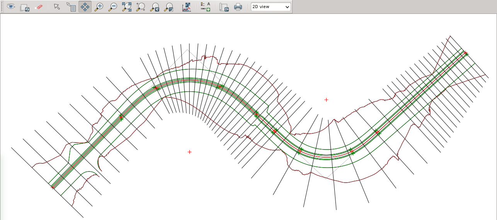
In the tab Cross again, we can select the flag-f to draw the cross sections and the terrain profile. The maps that we get are road1_TP_Ras, that It has two tables with some parameters, and road1_TP_Terr
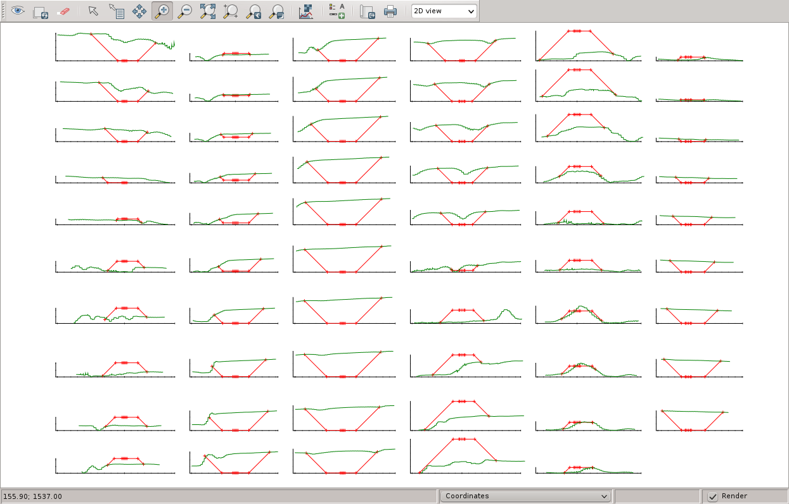
The flag -g draw the coordinates axes of the cross sections. Those maps have tables with columns for use with labels. It can be a bit slow.
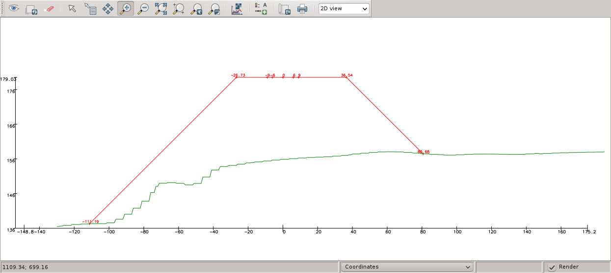
We need to give a dem in the terrain tabs, select the flag-u for update the solution and then run, to obtain those maps.
An example of this section can be seen in
http://www.youtube.com/watch?v=w2LGurDfbY0
(You can activate HD quality for better visualization)
Some lines before, we have seen who to write the cut/fill lines in plant, with the slope given in the table road1_Section.
Now we have defined the road, then we can generate points of the different alignments, breaklines and a hull of all points, with the flags -p, -b and -o.
The distance between points of each alignments is of 1 meters by default, but this can be changed in the Interval in straights and Interval in curves options. The result can be seen below.
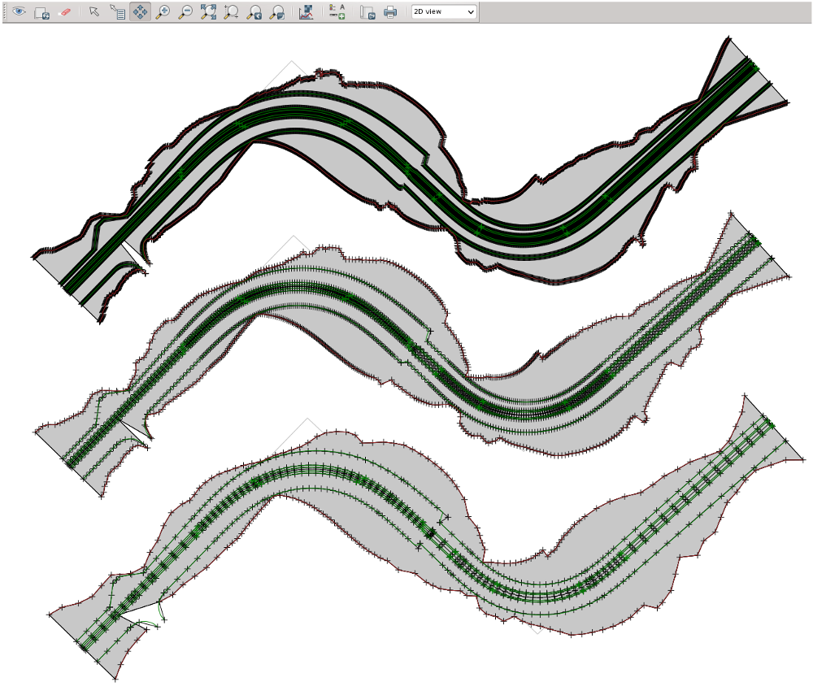
This three maps, created road1_Points, road1_Breaklines and road1_Hull can be used in v.civil.topo for get the triangulation of the road.
An example of this section can be seen in
http://www.youtube.com/watch?v=uFZ1PPxkE1c
(You can activate HD quality for better visualization)
To build another types of alignments like "curve-clothoid-curve", or roundabout see v.civil.tools
Jesus Fernandez-Capel Rosillo
Civil Engineer, Spain
jfc at alcd net
Last changed: $Date: 2014-03-18 03:16:51 +0100 (mar 18 de mar de 2014)$